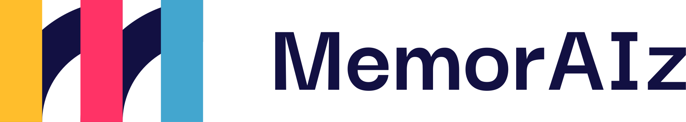
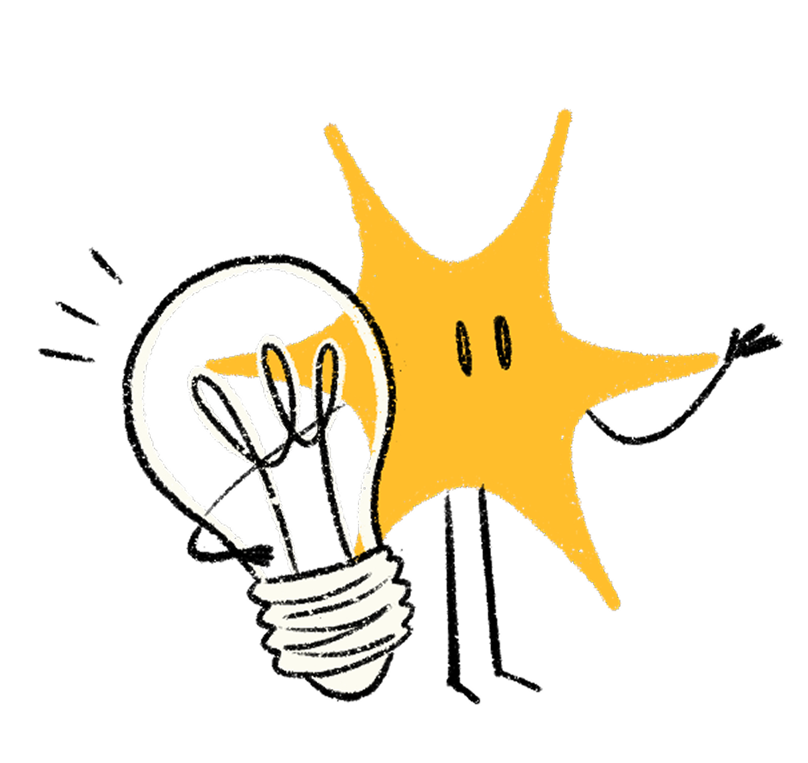
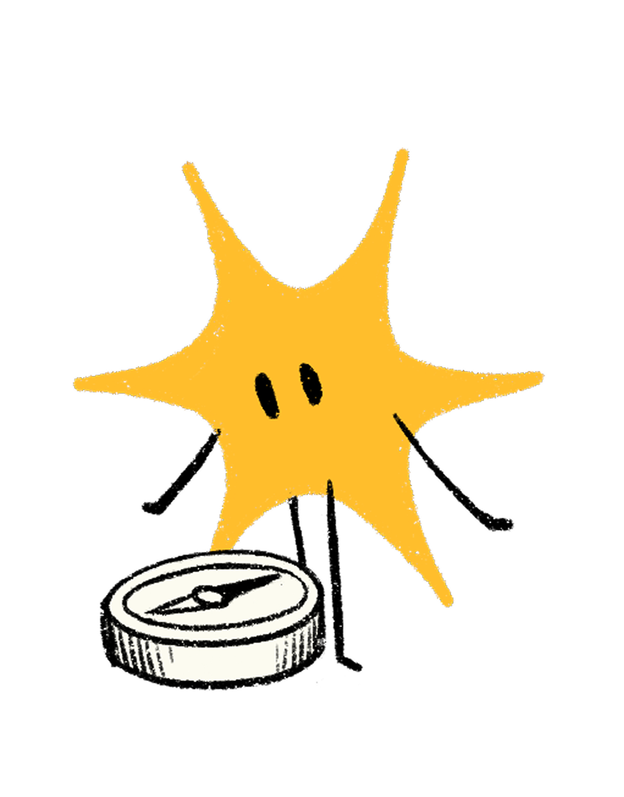
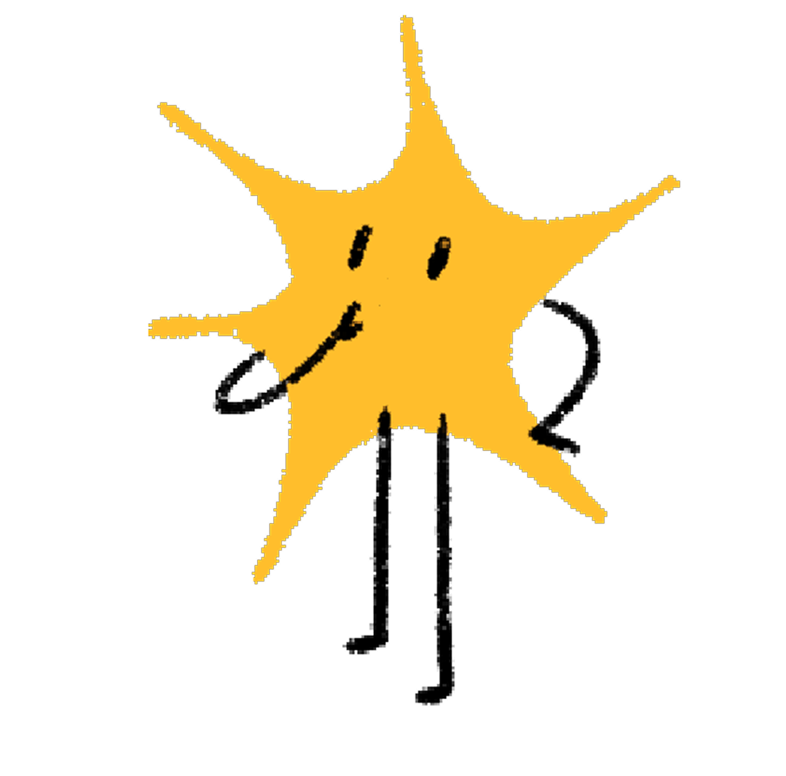

Quando il modello impara a pensare prima di rispondere
~30 minuti

Una nuova categoria di LLM, addestrati per ragionare
Più tempo per pensare = più affidabilità sui problemi difficili
Il thinking budget è un parametro che potete controllare
Scegliere il modello giusto è una decisione di design

Il "pensiero" visibile non è garanzia di trasparenza

Un pattern emergente che ottimizza costo e qualità
Per il team: scegliere il modello giusto per ogni task è una decisione di design, non solo tecnica
I benchmark — e perché non fidarsi ciecamente
Quando il modello ha già visto il compito in classe
Il panorama dei modelli: non esiste un solo fornitore
Sapere quando usare quale modello è il primo passo verso gli agenti AI — sistemi che fanno queste scelte autonomamente